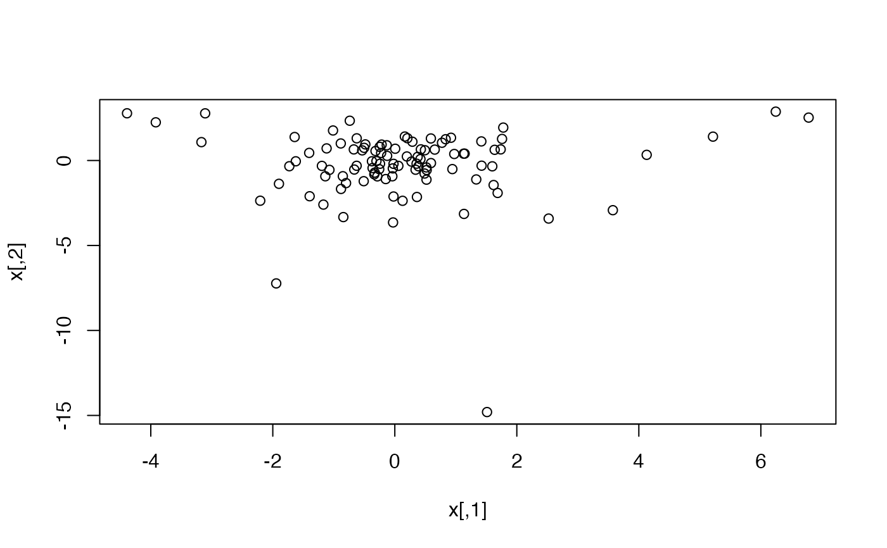
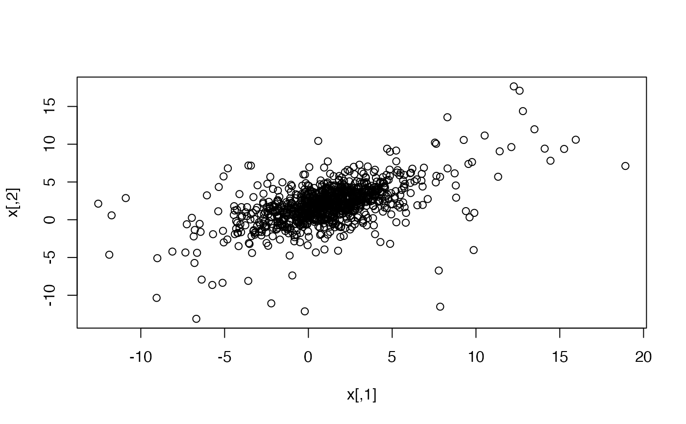

The Multivariate t Distribution
Mvt.RdThese functions provide information about the multivariate \(t\)
distribution with non-centrality parameter (or mode) delta,
scale matrix sigma and degrees of freedom df.
dmvt gives the density and rmvt
generates random deviates.
Arguments
- x
vector or matrix of quantiles. If
xis a matrix, each row is taken to be a quantile.- n
number of observations.
- delta
the vector of noncentrality parameters of length n, for
type = "shifted"delta specifies the mode.- sigma
scale matrix, defaults to
diag(ncol(x)).- df
degrees of freedom.
df = 0ordf = Infcorresponds to the multivariate normal distribution.- log
logicalindicating whether densities \(d\) are given as \(\log(d)\).- type
type of the noncentral multivariate \(t\) distribution. The choice
type = "Kshirsagar"corresponds to formula (1.4) in mvtnorm::Genz_Bretz_2009, see also Chapter 5.1 in mvtnorm::Kotz+Nadarajah:2004. This is the noncentral t-distribution needed for calculating the power of multiple contrast tests under a normality assumption.type = "shifted"corresponds to the formula right before formula (1.4) in mvtnorm::Genz_Bretz_2009 see also formula (1.1) in|mvtnorm::Kotz+Nadarajah:2004|. It is a location shifted version of the central t-distribution. This noncentral multivariate \(t\) distribution appears for example as the Bayesian posterior distribution for the regression coefficients in a linear regression. In the central case both types coincide. Note that the defaults differ from the default inpmvt()(for reasons of backward compatibility).- checkSymmetry
logical; if
FALSE, skip checking whether the covariance matrix is symmetric or not. This will speed up the computation but may cause unexpected outputs when ill-behavedsigmais provided. The default value isTRUE.- ...
additional arguments to
rmvnorm(), for examplemethod.
Details
If \(\bm{X}\) denotes a random vector following a \(t\) distribution
with location vector \(\bm{0}\) and scale matrix
\(\Sigma\) (written \(X\sim t_\nu(\bm{0},\Sigma)\)), the scale matrix (the argument
sigma) is not equal to the covariance matrix \(Cov(\bm{X})\)
of \(\bm{X}\). If the degrees of freedom \(\nu\) (the
argument df) is larger than 2, then
\(Cov(\bm{X})=\Sigma\nu/(\nu-2)\). Furthermore,
in this case the correlation matrix \(Cor(\bm{X})\) equals
the correlation matrix corresponding to the scale matrix
\(\Sigma\) (which can be computed with
cov2cor()). Note that the scale matrix is sometimes
referred to as “dispersion matrix”;
see mvtnorm::McNeil+Frey+Embrechts:2005, p. 74.
For type = "shifted" the density
$$c(1+(x-\delta)'S^{-1}(x-\delta)/\nu)^{-(\nu+m)/2}$$
is implemented, where
$$c = \Gamma((\nu+m)/2)/((\pi \nu)^{m/2}\Gamma(\nu/2)|S|^{1/2}),$$
\(S\) is a positive definite symmetric matrix (the matrix
sigma above), \(\delta\) is the
non-centrality vector and \(\nu\) are the degrees of freedom.
df=0 historically leads to the multivariate normal
distribution. From a mathematical point of view, rather
df=Inf corresponds to the multivariate normal
distribution. This is (now) also allowed for rmvt() and
dmvt().
Note that dmvt() has default log = TRUE, whereas
dmvnorm() has default log = FALSE.
Examples
## basic evaluation
dmvt(x = c(0,0), sigma = diag(2))
#> [1] -1.837877
## check behavior for df=0 and df=Inf
x <- c(1.23, 4.56)
mu <- 1:2
Sigma <- diag(2)
x0 <- dmvt(x, delta = mu, sigma = Sigma, df = 0) # default log = TRUE!
x8 <- dmvt(x, delta = mu, sigma = Sigma, df = Inf) # default log = TRUE!
xn <- dmvnorm(x, mean = mu, sigma = Sigma, log = TRUE)
stopifnot(identical(x0, x8), identical(x0, xn))
## X ~ t_3(0, diag(2))
x <- rmvt(100, sigma = diag(2), df = 3) # t_3(0, diag(2)) sample
plot(x)

## X ~ t_3(mu, Sigma)
n <- 1000
mu <- 1:2
Sigma <- matrix(c(4, 2, 2, 3), ncol=2)
set.seed(271)
x <- rep(mu, each=n) + rmvt(n, sigma=Sigma, df=3)
plot(x)

## Note that the call rmvt(n, mean=mu, sigma=Sigma, df=3) does *not*
## give a valid sample from t_3(mu, Sigma)! [and thus throws an error]
try(rmvt(n, mean=mu, sigma=Sigma, df=3))
#> Error in rmvt(n, mean = mu, sigma = Sigma, df = 3) :
#> Providing 'mean' does *not* sample from a multivariate t distribution!
## df=Inf correctly samples from a multivariate normal distribution
set.seed(271)
x <- rep(mu, each=n) + rmvt(n, sigma=Sigma, df=Inf)
set.seed(271)
x. <- rmvnorm(n, mean=mu, sigma=Sigma)
stopifnot(identical(x, x.))